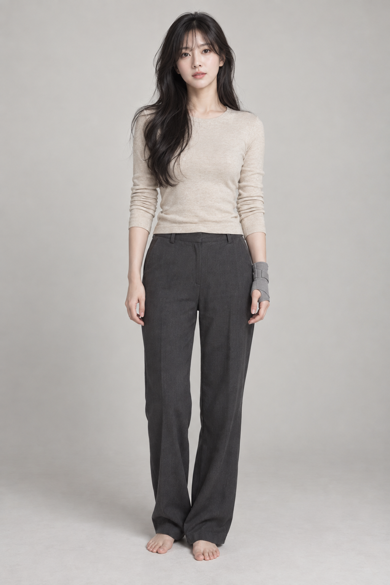
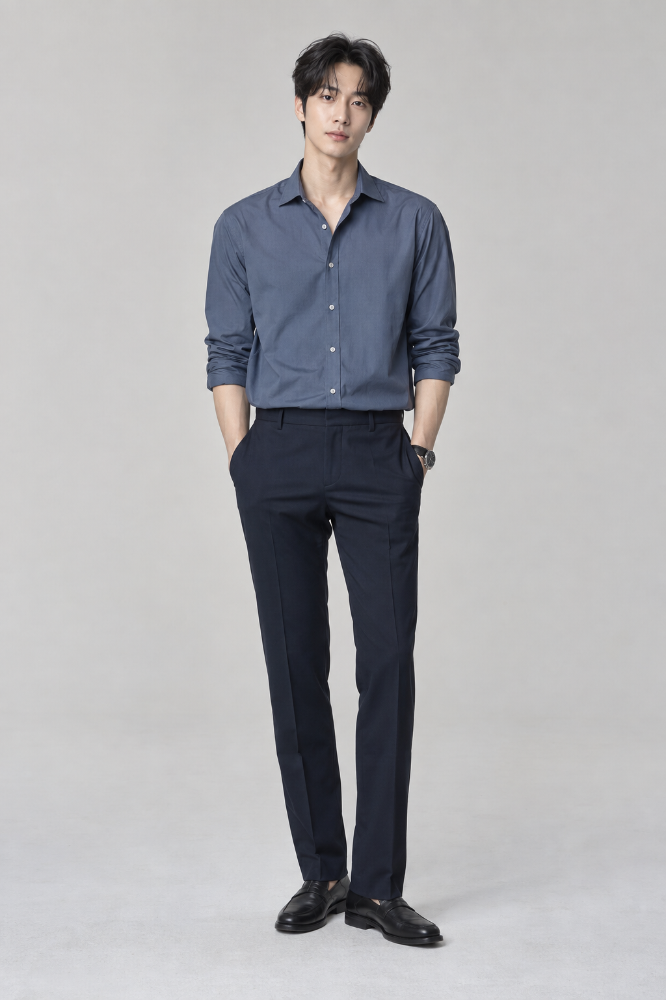
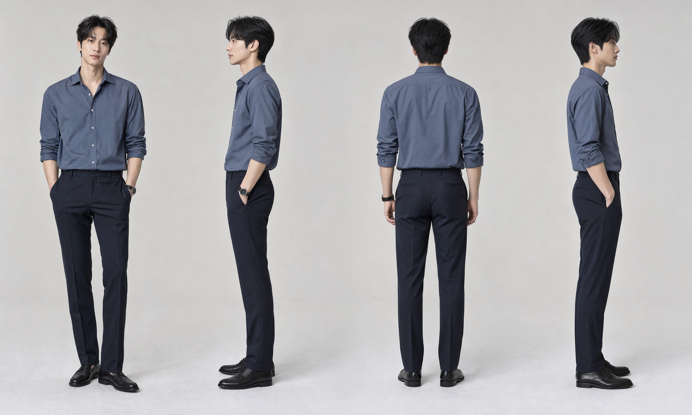
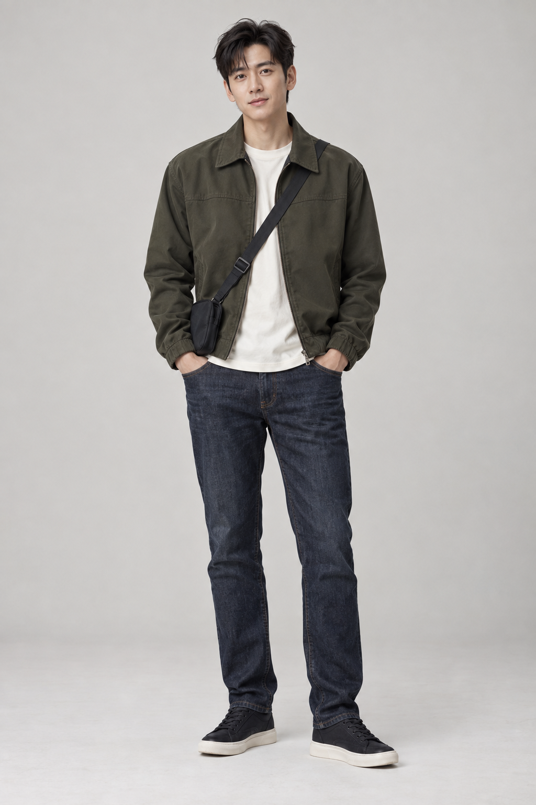
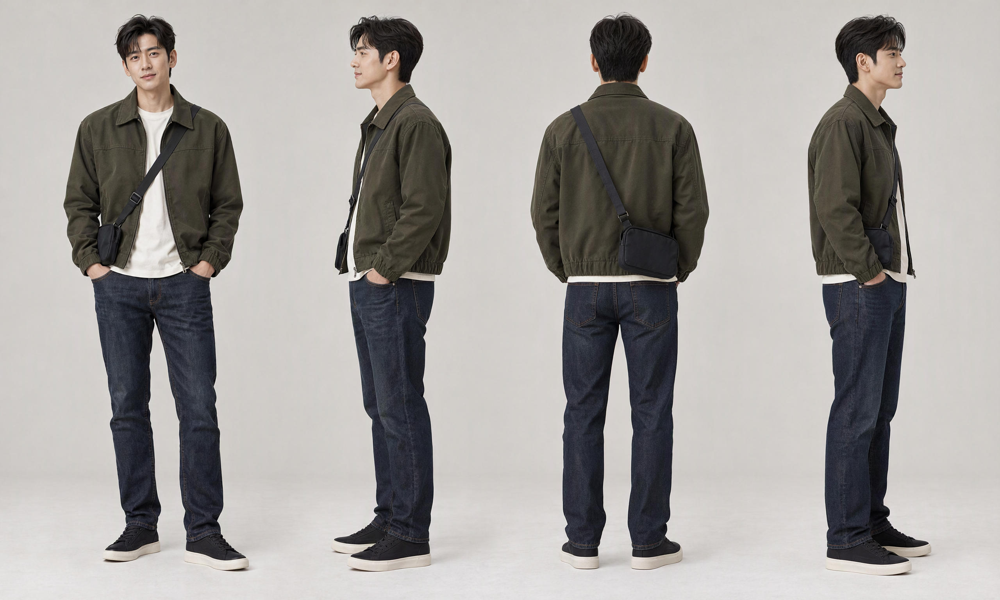

서윤 A
Selected casting reference

v01

v02 - native generation 2560 x 1536
 PNG
PNGUser confirmed all three characters: 2026-10-05. Final reference manifest
Same selected casting. Actual node changes: 2560 x 1536, native reference, original face crop, 60 steps.

PNG


PNG


PNG